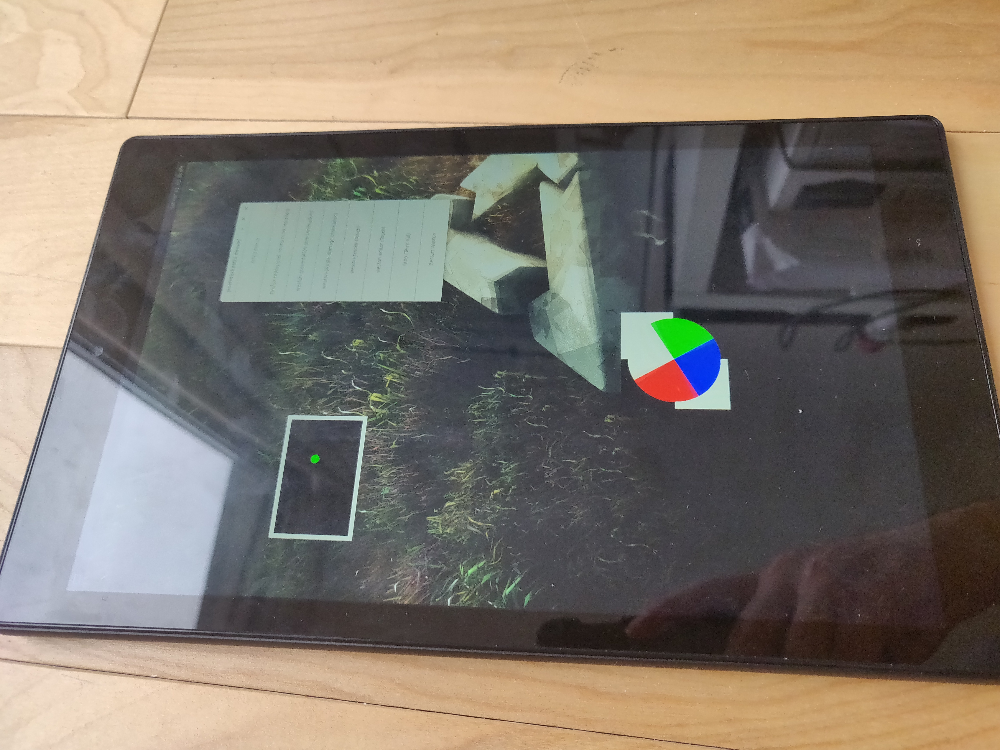

Amazon Fire HD 10 (amazon-suez)
|
 Fire HD 10 booted and running weston. | |
| Manufacturer | Amazon |
|---|---|
| Name | Fire HD 10 (7th gen) |
| Codename | amazon-suez |
| Released | 2017 |
| Category | testing |
| Original software | FireOS 5.3.7.0 |
| postmarketOS kernel | 3.18.19 |
| Hardware | |
| Chipset | MediaTek MT8173 |
| CPU | Quad-core (2x1.8 GHz Cortex-A72 & 2x1.4 GHz Cortex-A53) |
| GPU | PowerVR G6250 |
| Display | 1200 x 1920 IPS LCD |
| Storage | 32GB or 64GB |
| Memory | 2 GB |
| Architecture | aarch64 |
{kind=link}
| USB Networking |
Works
|
|---|---|
| Flashing |
Partial
|
| Touchscreen |
Works
|
| Display |
Works
|
| WiFi |
Broken
|
| FDE | |
| Mainline | |
| Battery |
Broken
|
| 3D Acceleration |
Broken
|
| Audio |
Broken
|
| Bluetooth |
Broken
|
| Camera |
Broken
|
| GPS |
Broken
|
| Mobile data |
Unavailable
|
| SMS |
Unavailable
|
| Calls |
Unavailable
|
| USB OTG |
Unavailable
|
| NFC | |
| Accelerometer |
Broken
|
|---|---|
| Magnetometer | |
| Ambient Light | |
| Proximity | |
| Hall Effect | |
| Barometer | |
| Power Sensor | |
| Camera Flash | |
|---|---|
| Keyboard | |
| Touchpad | |
| USB-A | |
| HDMI/DP | |
| Ir TX | |
| Ir RX | |
| Stylus | |
| Haptics | |
| Ethernet | |
| FOSS bootloader | |
Contributors
- Hadi Charara <hadicharara@ymail.com>
Users owning this device
How to enter flash mode
You have to have your bootloader unlocked through this method: https://forum.xda-developers.com/hd8-hd10/orig-development/unlock-fire-hd-10-2017-suez-t3913639
Entering fastboot through normal methods will not work as we need to access the hacked bootloader. Normal fastboot doesn't let us flash in the required partitions.
Simply hold volume up while powering it up to access TWRP. From TWRP you can reboot into the hacked bootloader as needed.
Installation
From TWRP, you have access to ADB sideload, which you can use to install the recovery zip exported from pmbootstrap, or you can reboot into the hacked bootloader to access fastboot. You have to take the following things into consideration:
- fastboot has a limit on the filesize of files to be flashed. rootfs cannot be flashed from fastboot. Only boot can be flashed. To flash rootfs, use ADB sideload.
- Since the unlocking of the bootloader modified the paritition scheme of the device, to flash into it, you have to execute: fastboot flash boot_x FILE_TO_BE_FLASHED
- The default recovery zip generated by pmbootstrap flashes boot.img into the paritition named 'boot'. This won't work as the hacked bootloader resides there. Instead, we have to unpack the zip file, modify line 5 of chroot/install_options and lines 69 and 70 of chroot/bin/pmos_install_functions to replace boot by boot_x. Repack the zip file afterwards and it should be good to go.
Mainline
| Parts | Components | In Torvalds tree? | In chromiumOS-5.4 kernel? |
|---|---|---|---|
| Chipset | MT8173 | Yes (mt8173.dtsi) | Yes (mt8173.dtsi) |
| GPU | PowerVR GX6250 | No | Yes (img-rouge) |
| Touch Screen | ft5726NEi | Yes (edt-ft5x06.c) | Yes (edt-ft5x06.c) |
| Accelerometer | BMA253 | No | No |
| ALSPS | STK3X1X/ltr559 | Yes (stk3310.c) / Yes (ltr501.c) | Yes (stk3310.c) / Yes (ltr501.c) |
| Sound | rt5514 | Yes (rt5514.c) | Yes (rt5514.c) |
See also
- pmaports!1193 Initial merge request
- Device package
- Kernel package